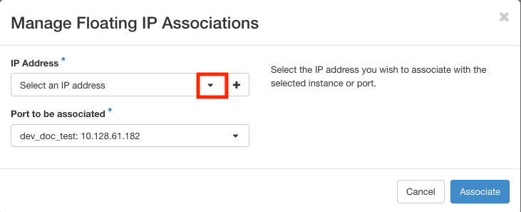
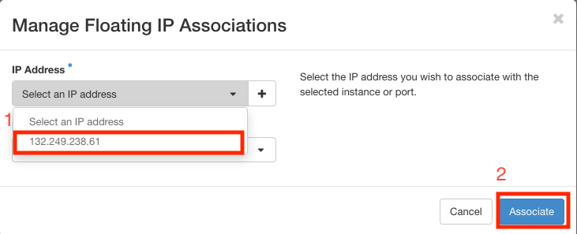
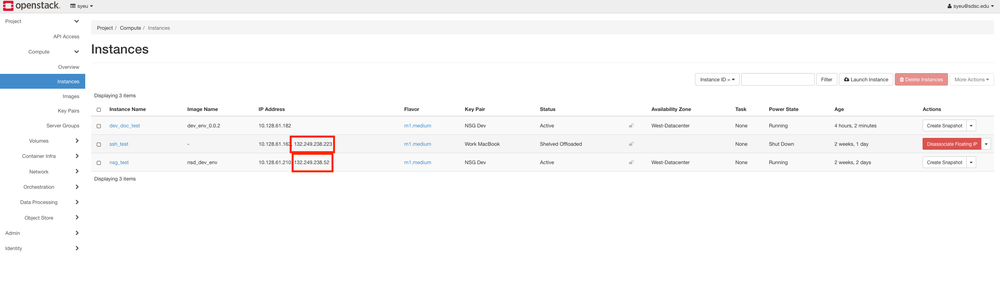

This is the user doc for the cloud environment that the Neuroscience Gateway (NSG) provides for neuroscience tool developers. The SDSC cloud based developer environment allows neuroscience tool developers to create a suitable instance on the SDSC cloud and use an image that includes basic software stack and tools that neuroscience tool developers may use for their tool development work. It provides:
It allows developers to put software in a Singularity container, connect to a VNC server, run Jupyter Notebook etc. Based on needs of the neuroscientist tool developers, other software and features will be provided in the tool development environment.
Development is done on the SDSC Cloud. To access the cloud dashboard, follow this link. You will log in with the username and password given to you by NSG.
Before launching any instances, you should upload an SSH key so that you can authenticate with them. Navigate to the Key Pairs page by going to Project -> Compute -> Key Pairs in the navigation menu on the left.
You can either create a key pair using the dashboard or upload an existing public key.
Click Create Key Pair on the right side of the screen. Give it any name that you would like and select SSH Key as the key type. Finally, click Create Key Pair. Your browser will automatically download the private key for you. You can store the private key anywhere on your computer. Remember the location you will need it when you try to SSH into your instance.
Click Import Public Key on the right side of the screen. Give it any name that you would like and select SSH Key as the key type. Then either select the public key file or paste its contents into the text box. Finally, click Import Public Key.
The following section should only be done once per project\ A security group is a firewall which control outgoing and incoming connections. Before you are able to use your SSH key to authenticate with an instance, you will need to set up a security group that will allow SSH connections.
Navigate to the Security Groups page. You can do this by going to Project -> Network -> Security Groups in the navigation menu on the left.

Click Create Security Group on the right side of the screen. In the popup window, name the security group "SSH" and then click Create Security Group. Next, click Add Rule on the right side of the screen. In the Rule dropdown, select SSH. Click Add to add the rule.
Development instances on the SDSC Cloud come prepackaged with software for development.
Navigate to the Instances page. You can do this by going to Project -> Compute -> Instances in the navigation menu on the left.

Click Launch Instance on the right side of the screen.

In the popup window, give your new instance any name you would like.

Click on Source on the left. In the dropdown for Select Boot Source, select Image. Under the Available section, select NSGImage. You can also search for the image in the search box. by clicking on the up arrow at the end of the row.

Click on Flavor on the left. Select the flavor with the CPU and RAM configuration that meets your needs by clicking on the up arrow at the end of the row. For this example, I will use m1.medium.

Click on Security Groups on the left. Select the SSH security group that you or your group has created earlier by clicking on the up arrow at the end of the row.

Click on Key Pair on the left. Select the SSH Key that you created earlier by clicking on the up arrow at the end of the row.

Click Launch Instance on the bottom right of the popup to finish.
Your newly created instance will not be able to be reached until you give it a public IP address by Associating a Floating IP with it. From the instances page. There are 2 options to associate a floating IP address to an instance. First, will be checking if the project already has available IPs to use. Second, will be requesting new IPs if the project does not currently have any IPs or all of them are in use.
 Start by finding the instance that you would like to add an
IP to. Click on the dropdown menu under the Actions column.
Then select Associate Floating IP option
Start by finding the instance that you would like to add an
IP to. Click on the dropdown menu under the Actions column.
Then select Associate Floating IP option

In the IP Address field, click the dropdown arrow.

Select the IP address from the dropdown menu that you would like to use. Then click on the Associate button.
If you do not see any IPs in the dropdown menu, the next section will cover how to request a new IP

In the IP Address field, click the + at the end.
In the popup window, click Allocate IP. Then click Associate in the bottom right of the popup window.
Your instance should now be accessible at the associated IP address. Note that this is the IP address that starts with 132.* not 10.* .
You should be able to connect to your instances using the SSH key that you selected when created the instance. When connecting to your instance, use ubuntu as your username. The IP address starts with 132.* is the one you will use to SSH into the instance The IP should be the 2nd value in the IP Address column on the Instances page.

For help connecting from Mac or Linux, look here. For help connecting from Windows, look here.
Instances should only be kept running when they are being used. When instances are not in use, they should be shelved. Shelved instances are essentially paused until they are needed again. Data stays on shelved instances and is not lost.
From the instances page, find the instance that you would like to shelve. Click the dropdown arrow at the end of the row and click Shelve Instance.

From the instances page, find the instance that you would like to unshelve. Click the dropdown arrow at the end of the row and click Unshelve Instance.

For more information and guides on how to use the SDSC cloud, see the SDSC Cloud Wiki.